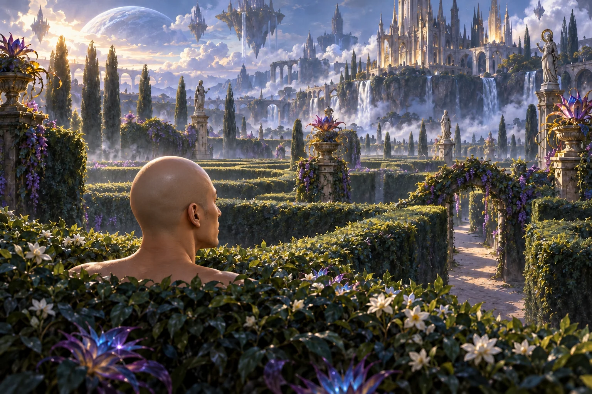
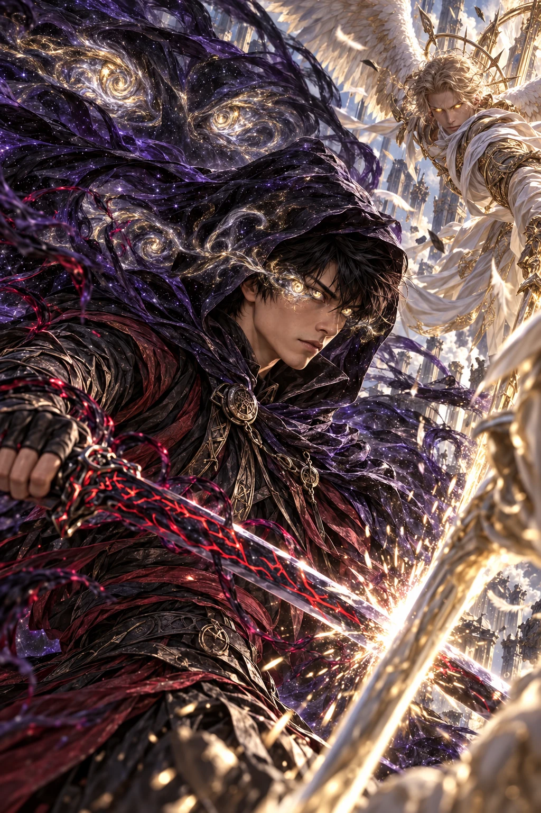

A WORLD WORTH RETURNING TO
He Who Fights
with Monsters.
Strangers become friends.
Ordinary choices become legends.
01 / THE READING ROOM
Choose your chapter.
Every book has its own collection.
Choose a book to reveal its spoilers.
02 / BOOK I · THE SCENE GALLERY
Moments that stay.
Selected moments, reimagined in paint.
Open an artwork to take a closer look.
All images are original AI-generated interpretations. Architecture, clothing and staging are artistic choices. The Books 1–3 gallery uses selected scenes, not an exhaustive chapter-by-chapter retelling.
03 / THE CHARACTER BIBLE
Know the company.
Faces, powers and the bonds between them.
Profiles follow your selected book.
No characters match. Try another name or filter.

BOOK XI / A PORTRAIT OF POWER
Silver. Gold.
And the void.
A close-up study of Jason’s otherworldly gaze, with living darkness and a cloak full of stars.
Interpretive artwork · no specific chapter assignedTHE ORIGINAL ART COLLECTION
Beyond the chapter.
The original Book Eleven studies,
including the illustrated familiar dossier.
A NOTE ON THIS EDITION
A companion to
your imagination.
This is an unofficial fan companion to He Who Fights with Monsters by Shirtaloon (Travis Deverell). It is not affiliated with the author or publisher. All illustrations are AI-generated interpretations, not official artwork. No book text or official cover art is reproduced.
Summaries and character notes are original, concise guides. Publisher pages establish the premises; public author material and community references support scene and character details. Community guides can contain mistakes and extensive later spoilers. Book numbers refer to the original English editions, not the combined three-book “Volume I” arc.
Choosing Books 1, 2 or 3 keeps the Book 11 scenes and late-series art out of the gallery and lightbox. Character introductions, early powers and relationships are scoped to the selected book. The original character portraits use an interpretive series design.
Sources & reading references
The illustrations are a visual selection, not a substitute for reading the novels. Source links leave this site and may reveal more than the selected book.